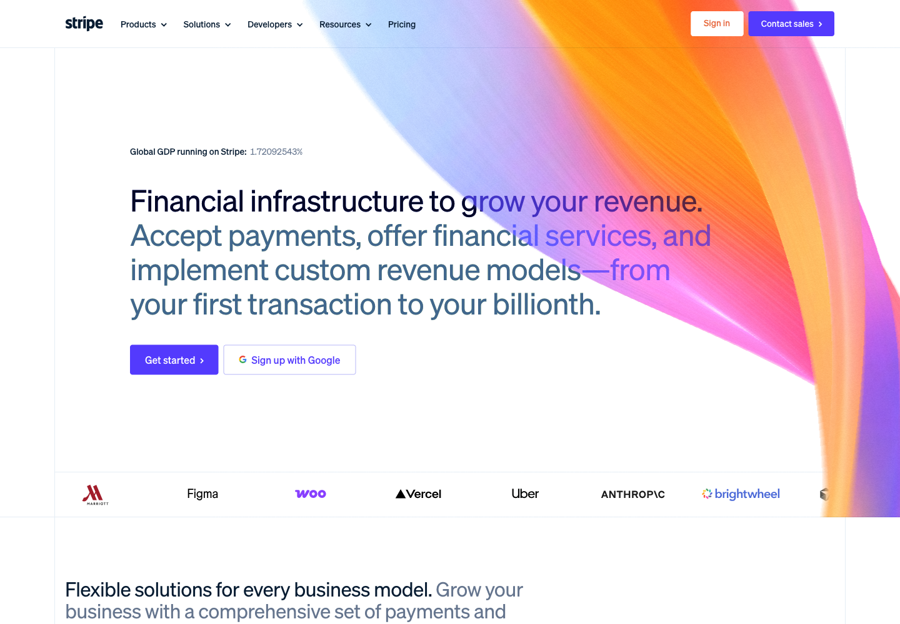
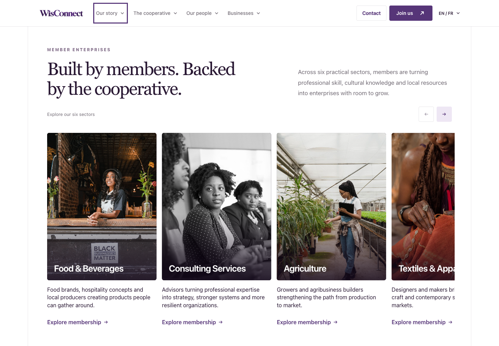
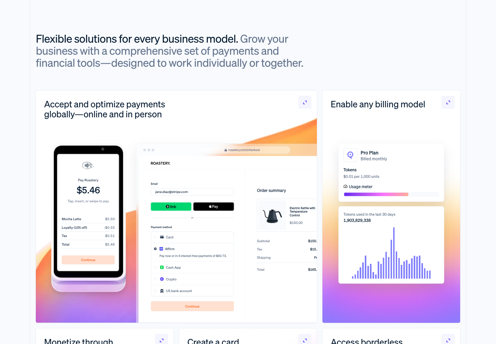
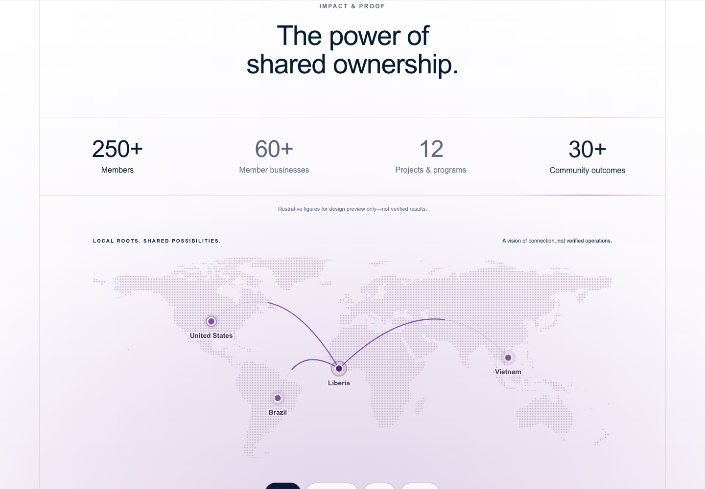
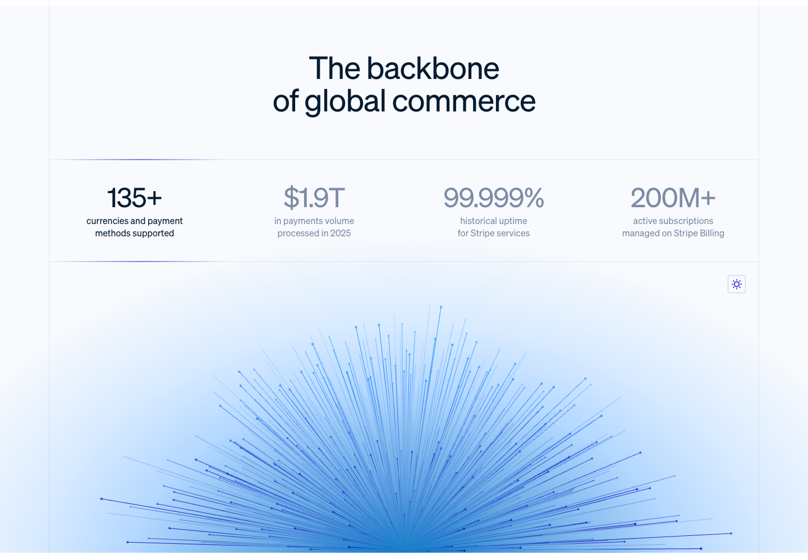
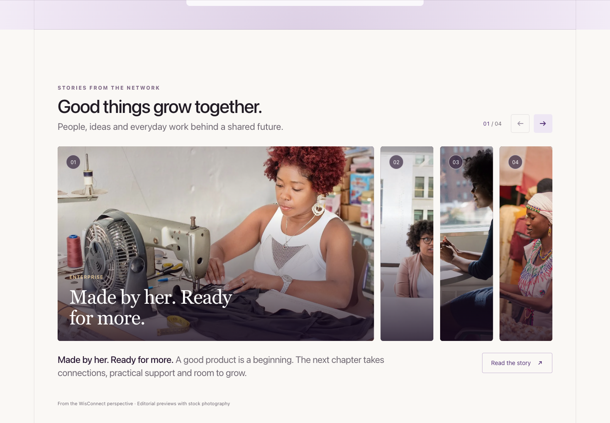
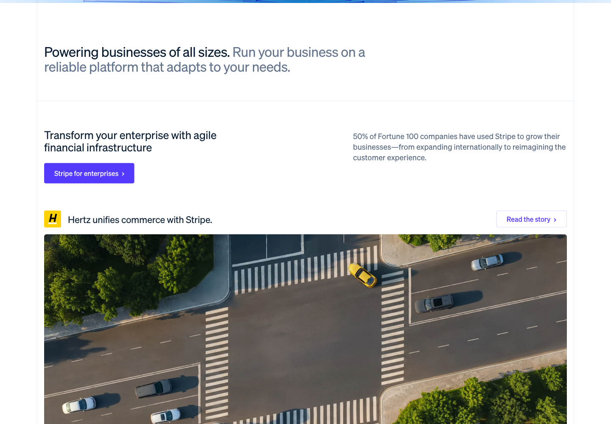
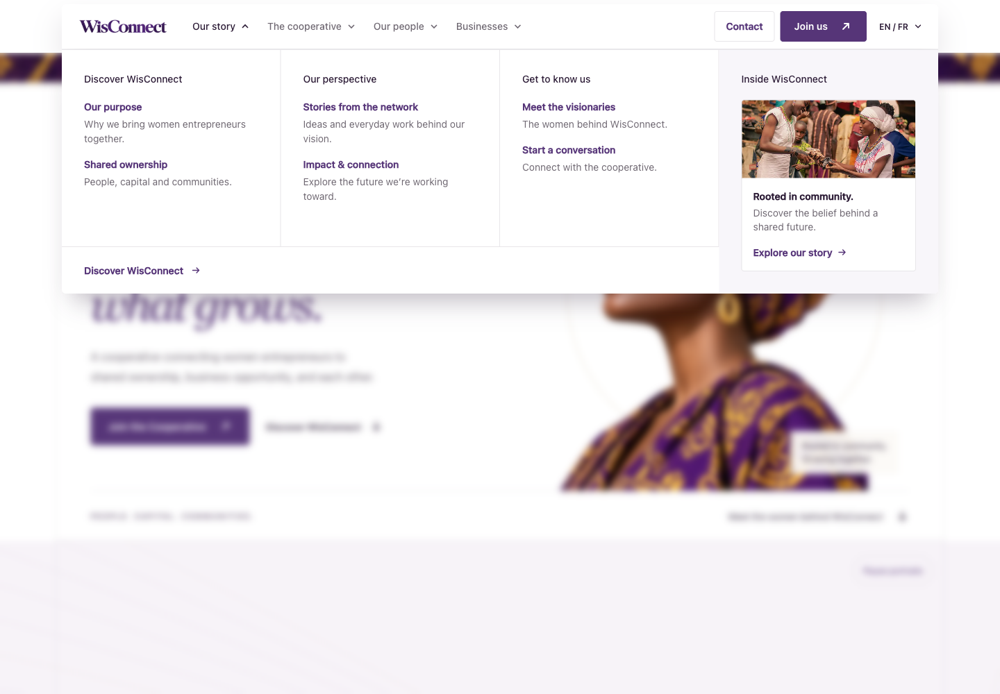
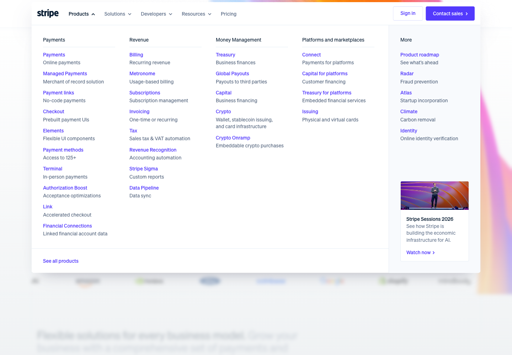
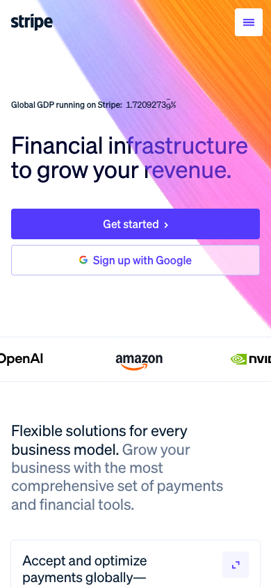

01 / Identity and page rails
WisConnectWisConnect has a strong identity worth keeping.StripeStripe repeats a disciplined grid and type system.
At 1440px, WisConnect’s outer rails are x=80 / 1360; Stripe’s section frame starts at x=87. The difference in perceived polish is mostly inside the frame: content alignment, type hierarchy and specificity.
02 / What the cards actually offer
WisConnectSix sector illustrations; all cards lead to Join.
StripeProduct demonstrations open detailed product content.
WisConnect’s carousel works. Its “Member enterprises” label promises more specificity than the sector content provides. A named member business or an accurately labeled sector overview would make the design more credible.
03 / Visual authority needs evidence
WisConnectLarge figures are explicitly unverified placeholders.
StripePublished metrics have defined business meanings.
This is the most consequential gap. WisConnect borrows the visual language of proof while its small note says the numbers are illustrative. Remove unverified public figures; keep future ambition clearly labeled. Stripe’s claims were observed, not independently verified.
04 / Editorial preview versus customer evidence
WisConnectStock photos and conceptual editorial previews.
StripeNamed customers and case-specific stories.
The gallery is visually effective, but the opened WisConnect story does not document an actual member’s experience. One approved, specific story would build more confidence than several interchangeable essays.
05 / Navigation should fit the content
WisConnectMultiple groups repeat a few homepage destinations.
StripeA broad menu serves a broad product catalog.
The WisConnect menu functions, but carries more structure than the current site needs. Simplify around the destinations that exist. Do not imitate the scale of Stripe’s navigation just because its layout is attractive.
07 / Mobile should earn every screenful
WisConnect390 × 844 — readable, with a large portrait below.Stripe390 × 844 — a shorter message reaches product content sooner.
Neither sampled page overflowed horizontally. WisConnect’s homepage was about 11,678px tall at this viewport. Shorten repeated mission copy and reduce the leadership reveal before adding more mobile effects.
Supporting screenshots and interaction evidence
Dashboard screenshots use synthetic accounts and intercepted API responses. No real message or account change was made. Leadership screenshots distinguish intermediate animation from its final revealed state.